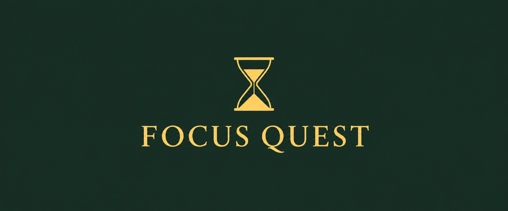
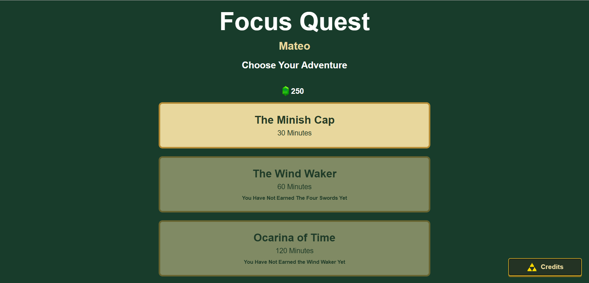
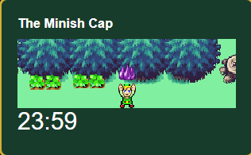
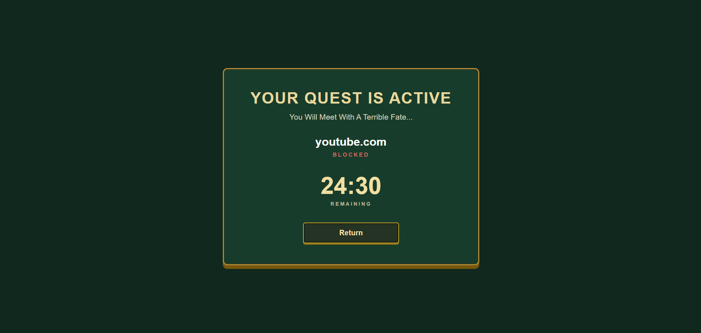
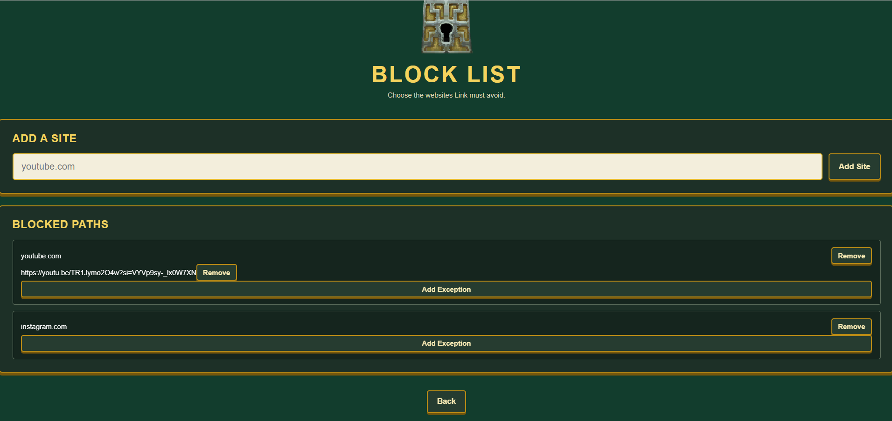
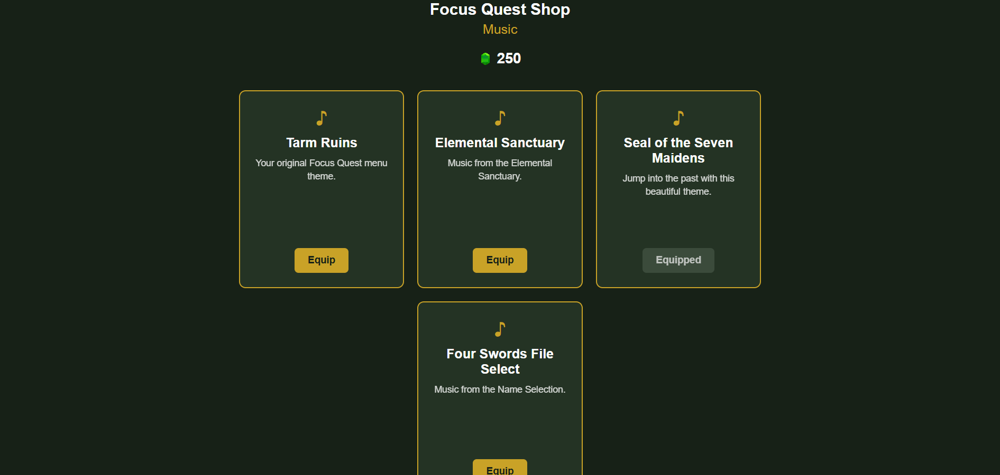

The project journal/ 01
Fun & Insightful Projects I've Done.
Focus Quest.
Turn focused work into an adventure.

01 / The story
About the
project.
Focus Quest began as a fun personal project to help me stay focused while studying online. I kept checking Instagram and other social media websites during study sessions, so I decided to build a Chrome extension that blocks distracting websites.
Making focus feel like an adventure
To make the experience more personal, I added a Zelda touch. I wrote JavaScript that injects a HUD into the webpages I visit, showing Link walking and simulating an adventure while I study.
The challenge: one-time milestones
One challenge was making sure element milestones triggered only once, rather than repeating whenever I opened another webpage. I added a check and a hidden counter to track whether an event had already fired and prevent it from triggering again.
What I learned
Despite the hurdles, this was one of my most enjoyable personal projects. It helped me refine my HTML and CSS skills while learning much more JavaScript.
Skills
- HTML
- CSS
- JavaScript
- Project
- Focus Quest
- Availability
- ZIP download
- In the journal
- 01 / 03
02 / A closer look
Scenes from the project.
From choosing a quest
to staying focused.










Select a screenshot to view the full-size image.
03 / Continue the journey
Take a closer look.
Download the project archive to explore it on your computer.
04 / Get started
Install Focus Quest.
Version 1.0.0 · Desktop Google Chrome · Manual installation from the ZIP. No Chrome Web Store installation is required.
Installation
- Download the project. Use the Focus Quest ZIP download and save it to your computer.
- Extract the ZIP. On Windows, right-click it and choose Extract All. On macOS, double-click the ZIP. Keep the extracted folder in a permanent location.
-
Open Chrome’s Extensions page.
Type
chrome://extensionsinto Chrome’s address bar and press Enter. -
Load the extension.
Turn on Developer mode, then click Load unpacked.
Select the extracted
FocusQuest-v1.0.0folder that directly containsmanifest.json. Select the folder, not the ZIP or the manifest file. - Pin Focus Quest. Open Chrome’s puzzle-piece Extensions menu and pin Focus Quest. Click its toolbar icon to open the menu.
Start your first quest
- Enter a player name and choose Begin Adventure if this is your first launch.
- Open Block List and add the websites you want to avoid before starting a quest. Return to the main menu.
- Select The Minish Cap, then Begin Quest to start the 30-minute session. Visit a regular webpage to see the walking Link HUD and timer.
Next project
AUKA